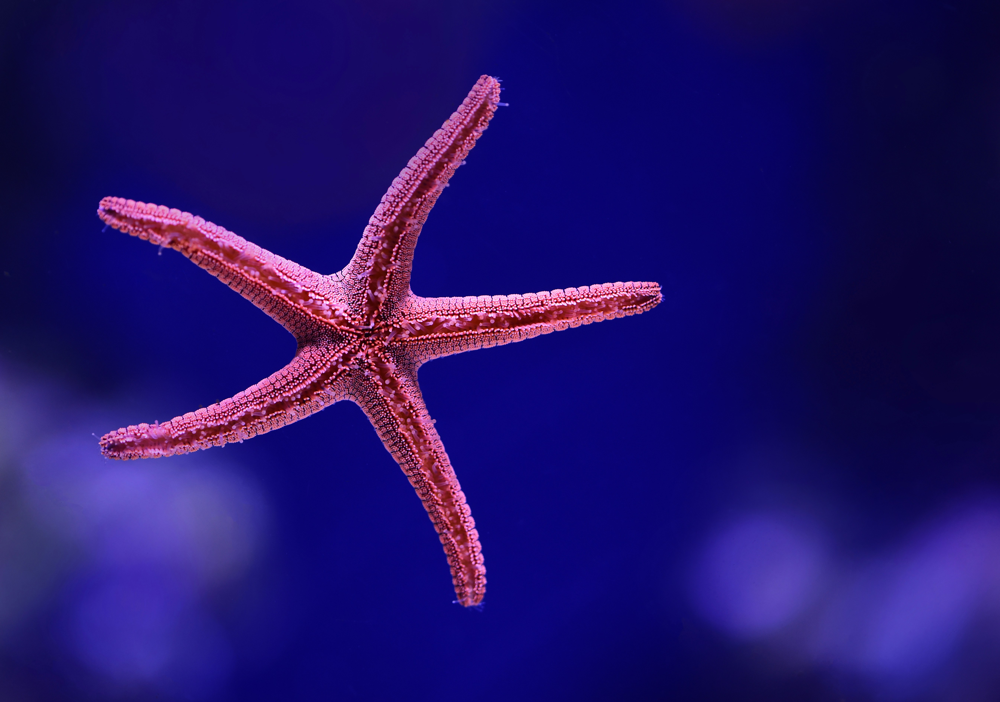

Should we put a title here ?
Blue is...

The color of the sea. Did you know that, in normal conditions, water absorb most of the red-green spectrum ? Thus making only blue light coming back to our eyes.
Pink is...
The color of many corals. It is determined by algaes, the most important being the zooxanthellae which in symbiosis with the organism helps it live.
Black is...
the hue of the abyss' depth. Not only this deep light can't penetrate, but at 10 kms under the sea you can be crushed with a tonne of water column weight resting upon you.
Deep blue is...
The name of a shark. The biggest white shark ever observed by man !
Beige is...

The color of sand. If every human had an equal amount of sand, they would have a quadrillion grains.